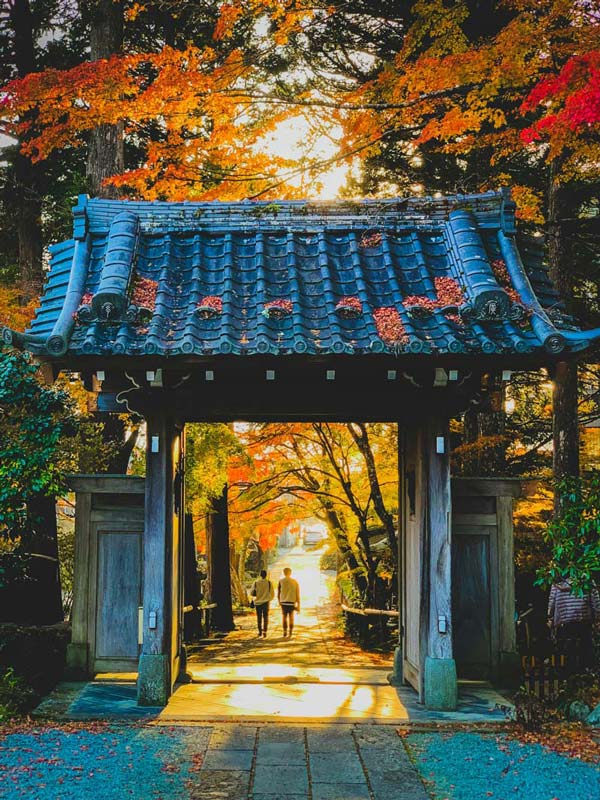
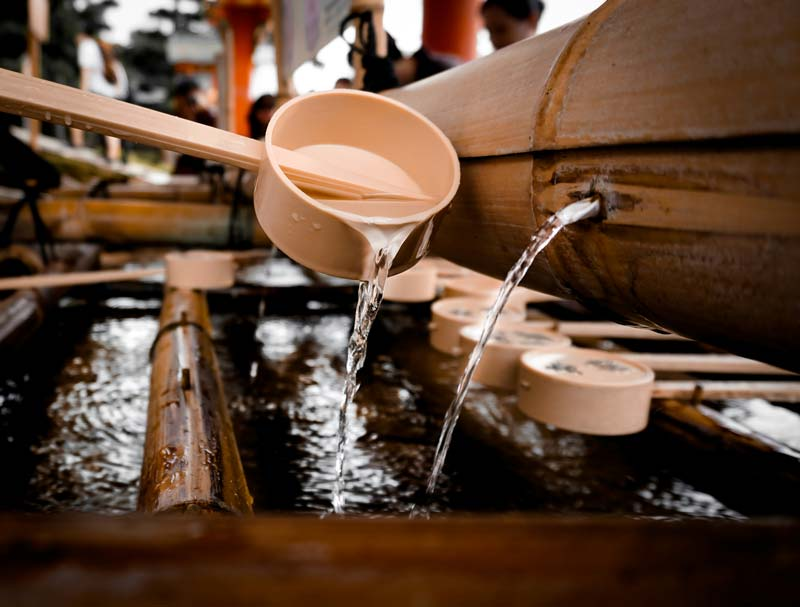
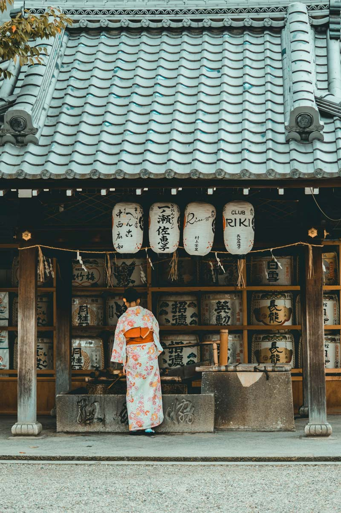

-

日本
福岡
-

成團人數
5-10人
-

一人價格
35,990

MENU
出團日期
Data

2024 / 08 / 25 (五) - 2024 / 08 / 28 (一)
南南航空： 去程CB175（9：00-12：00）/回程CB179（14：00-17：00）
2024 / 07 / 20(四) - 2024 / 07 / 24(日)
南南航空： 去程CB165（9：00-12：00）/回程CB169（14：00-17：00）
當地專門導遊
Amanda
人生就像一本書，若不旅行，就只讀了其中的一
頁，為您打造豐富多彩的旅行體驗！
個性: 細心親切、待人溫和
語言: 中文、日文、台語
經驗: 旅日工作10年，有3年帶團資歷

太宰府天滿宮
神社內有悠久的歷史和文化遺產，如日本國寶級別的銅鳥居和梅樹等。
此外，這裡還有蜿蜒的參道和美麗的園林，是一個令人心曠神怡的地方。



- Day1
- Day2
- Day3
- Day4
STOP1
太宰府天滿宮
.jpg)
.jpg)
.jpg)
太宰府天滿宮位於日本福岡縣太宰府市，是一座歷史悠久、文化底蘊深厚的神社。
它供奉著天滿大自在天皇神，是日本天滿信仰的中心之一。
太宰府天滿宮建立於公元寶龜元年（701年），距今已有一千三百多年的歷史。
這裡是日本重要的參拜地之一，每年吸引著大量的信徒和遊客前來參觀。

乘車約1小時
STOP
2


.jpg)
.jpg)
.jpg)

徒步約10分鐘
STOP3
福岡城
.jpg)
.jpg)
.jpg)
福岡城位於日本福岡市中心，是九州地區最著名的歷史古蹟之一。
福岡城的特色在於其石垣，被譽為日本最精緻的城垣之一。
城內有眾多文化遺產，包括天守閣（重建），二之丸庭園，以及武家屋敷等。
另外，城外的櫻花和櫻花祭也是當地著名的觀光資源之一。
乘車約1小時
STOP
4
.jpg)
.jpg)
.jpg)
徒步約10分鐘
STOP5
.jpg)
Day2
Day3
Day4
備註
Note
 團費不含:不含小費,不含行李超重費,不含接送費,不含稅。
團費不含:不含小費,不含行李超重費,不含接送費,不含稅。- 行程中所有的景點料金與餐食費，都已包含在團費中。
- 行程中常安排許多有特色的料理，無法對應餐食禁忌或素食狀況，請貴賓們諒解。
- 行程設定為團體行程，貴賓於出遊期間之人身安全，於旅遊行程期間，恕無法接受脫隊之要求。